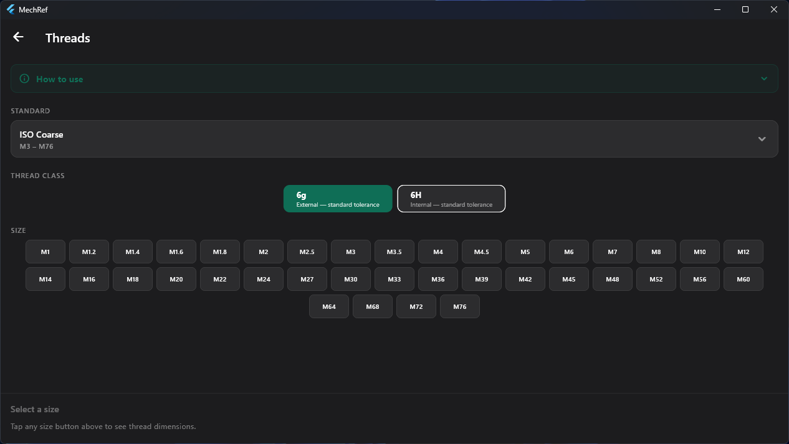
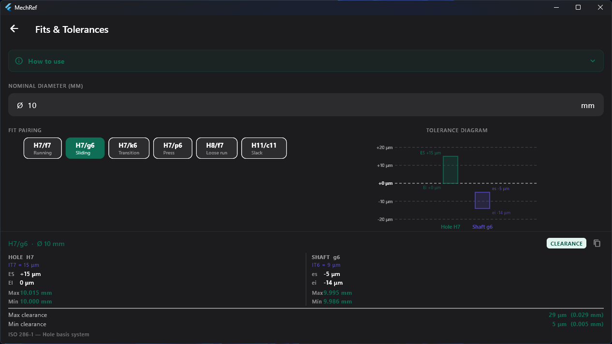
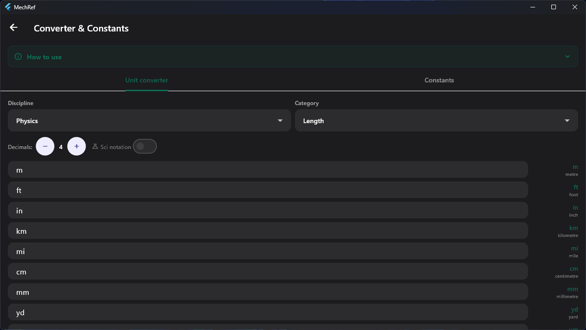
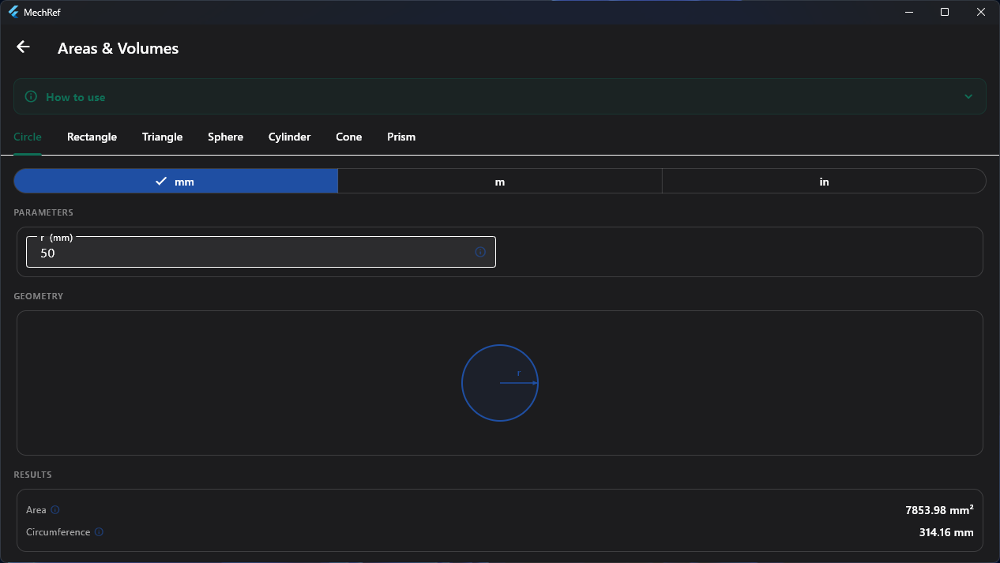
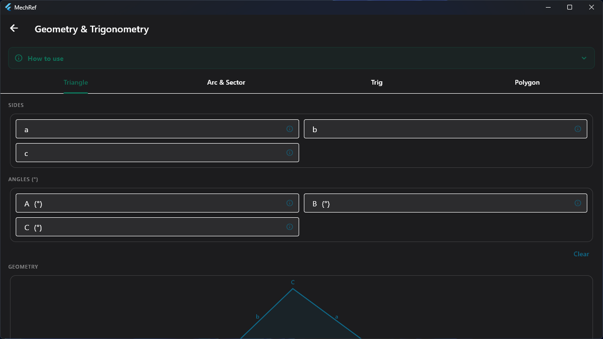
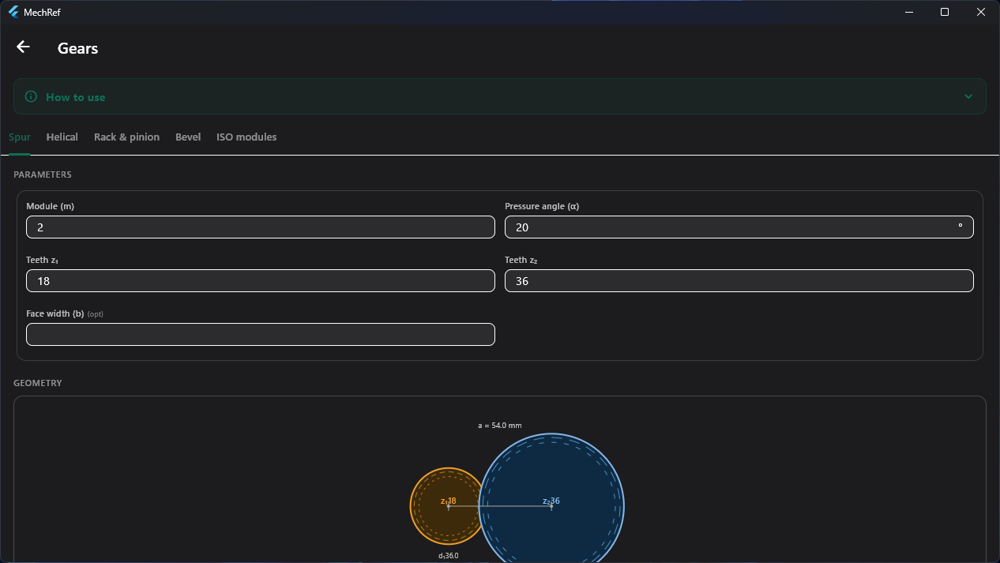
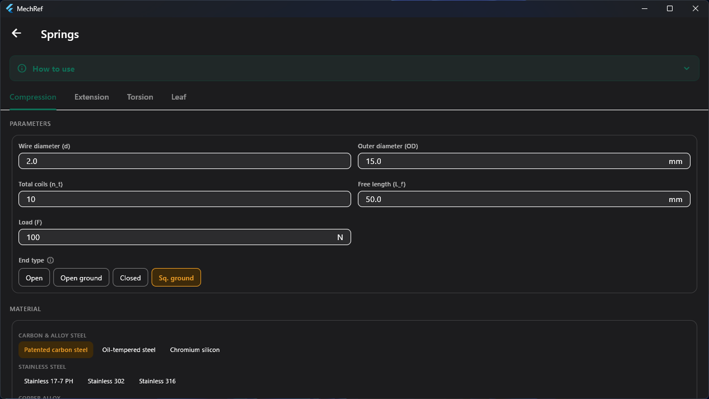
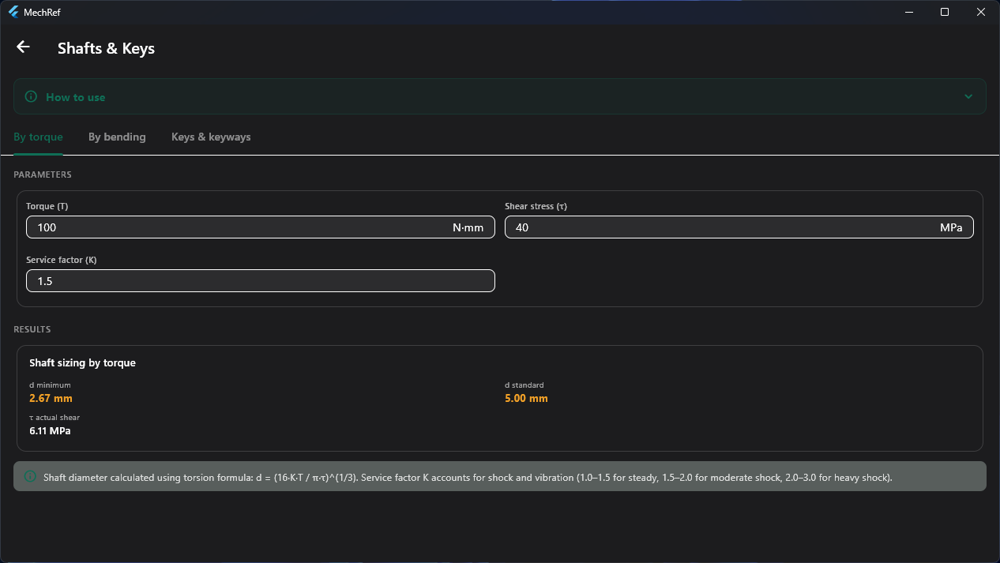
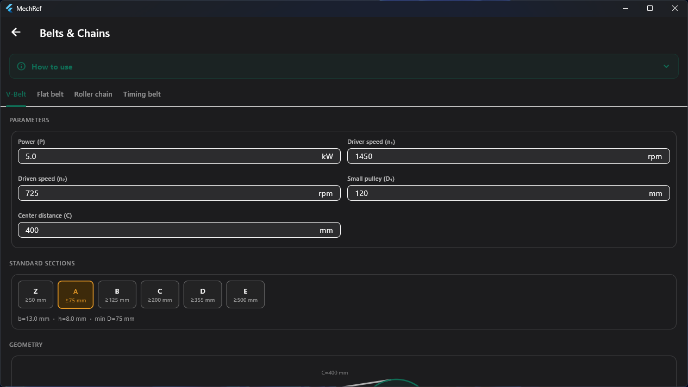
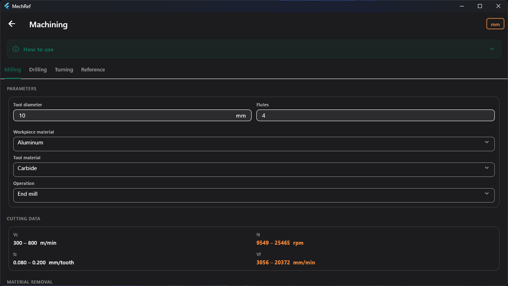

A guided tour of every MechRef module — what it does, what it looks like, a worked example, and how to use it. Four modules are free forever. The rest unlock with a single one-time Pro purchase. Here's exactly what you get, so you can decide if Pro is worth it.
Everything in Free stays free — no ads, no account, no time limit. Pro is a one-time purchase that unlocks the six professional modules plus the advanced standards, disciplines and 3D solids inside the free modules.
| Module / feature | Free | Pro |
|---|---|---|
| Free modules — yours forever | ||
| ThreadsISO Metric (Coarse/Fine), UNC, UNF | ✓ | ✓ |
| + Whitworth, BSP, NPT, ACME, Trapezoidaladditional thread standards | – | ✓ |
| Fits & TolerancesISO 286-1, hole-basis system | ✓ | ✓ |
| Converter & ConstantsPhysics & Mechanics · Math/Physical/Atomic constants | ✓ | ✓ |
| + Fluid mechanics, Thermodynamics, Materials constantsextra disciplines & constants | – | ✓ |
| Areas & Volumes2D shapes — circle, rectangle, triangle | ✓ | ✓ |
| + 3D solids — sphere, cylinder, cone, prismvolumes & surface areas | – | ✓ |
| Pro modules | ||
| Geometry & Trigonometrytriangle solver, arc, trig, polygons | – | ✓ |
| Gearsspur, helical, rack & pinion, bevel | – | ✓ |
| Springscompression, extension, torsion, leaf | – | ✓ |
| Shafts & Keyssizing by torque/bending, keyways | – | ✓ |
| Belts & ChainsV-belt, flat belt, roller chain, timing belt | – | ✓ |
| Machiningmilling, drilling, turning, reference tables | – | ✓ |
| Everything else | ||
| No ads · no subscription · no account | ✓ | ✓ |
| Works fully offline | ✓ | ✓ |
| English & Spanish | ✓ | ✓ |
| All future Pro modules included | – | ✓ |
// Pro is a one-time purchase — buy once, keep forever, all future Pro modules included.

Look up complete thread data for any standard fastener size — pitch, pitch and minor diameters, thread depth, tensile stress area, and a recommended tap drill (≈75% engagement). Pick a standard and class, then tap a size.

Resolve any ISO 286-1 hole-basis fit. Enter a nominal diameter, pick a fit pairing, and read the hole and shaft deviations, IT grades, limit dimensions and the resulting clearance or interference — all next to a tolerance-band diagram drawn to scale.

A live, multi-field unit converter across engineering disciplines, plus a library of physical and engineering constants. Type into any field and every other unit recalculates instantly — no convert button, no swapping.

Fast area, volume and surface-area calculations for the most common engineering shapes, each with a live diagram and a mm / m / inch selector. The 2D shapes are free; the 3D solids are part of Pro.

A four-in-one geometry toolkit: a full triangle solver, an arc & sector calculator, a trig-function explorer, and a regular-polygon calculator — each with a live diagram.

Work out gear geometry for spur, helical, rack & pinion and bevel gears to ISO 54 modules — reference diameters, centre distance and ratios — with a live gear-pair diagram as you type.

Design and check compression, extension, torsion and leaf springs — spring rate, shear stress, deflection and solid length — with selectable end conditions and a materials library.

Size shafts by torque or by bending, and select keys and keyways. Each result shows the minimum diameter, the nearest standard size, the actual stress and the governing formula.

Size V-belt, flat belt, roller chain and timing belt drives — speeds, ratios, standard sections, belt length and tensions — with a drive-geometry diagram.

Cutting-speed, spindle-speed, feed-rate and material-removal calculations for milling, drilling and turning — matched to your workpiece and tool material — plus reference tables.
Start with the free modules today. Unlock the full toolkit with a single one-time Pro purchase — no subscription, no ads, and every future Pro module included.